スパンブリ中心街へと向かう。
道傍にやけにカラフルな看板がたくさん立っている。
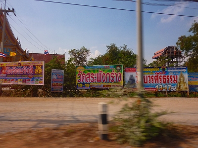
私はタイ語が読めないので絵面から想像するしかないのだが、どうやら寺院の看板のようだ。
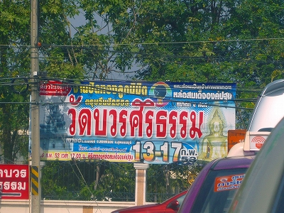
イベントの案内なのか喜捨のお願いなのか詳細は判らないが、日本でこんな積極的な光景はあまり見たことがないので（ないわけではないが量がハンパない）、ちょっとしたカルチャーショックだった。
あとお墓や祠（サンプラプーム）もホームセンターで売ってるのが結構新鮮でした。
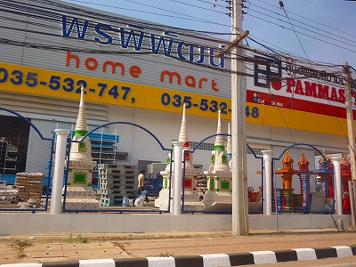
てな具合にタイの郊外風景を楽しんでいるうちにスパンブリの中心部に入ってきた。
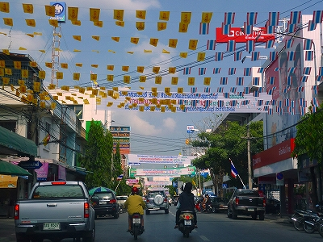
まあ、これといって特徴もない典型的なタイの地方都市である。
数少ない名所として120ｍの展望塔があるくらいだが、一体そこから何を見るというのだろう？
そんなスパンブリだが、歴史的には重要な場所だったりする。
時は16世紀、ビルマに占領されていたタイ（アユタヤ朝）が数々の戦闘により独立を果たした。
中でも最激戦地だったのがスパンブリだったという。
そしてその一連の戦闘の立役者が後にタイ三大王と称されるアユタヤ朝21代王ナレースワン。
彼は幼い頃、人質としてビルマに捕らわれていたが、帰国後アユタヤを復興し、祖国の独立を果たした英雄だ。
現在でもタイ国内で彼の像を見かけるが、象に乗って戦っている姿が多い。
これはスパンブリでの激戦の際、自らが象に乗り戦った、という逸話によるものである。
そんな勇ましいビルマからの独立を顕彰し、スパンブリの街にはナレースワン王の像が建っている。
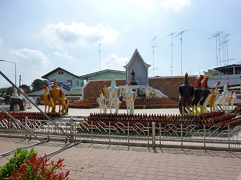
場所は2つの大通りが合流する三叉路の三角地。
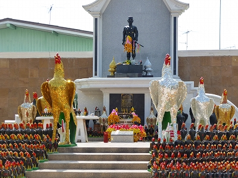
中央の台座に立っているのがナレースワン王である。
ちなみにナレースワン王はムエタイの創始者ともいわれている。
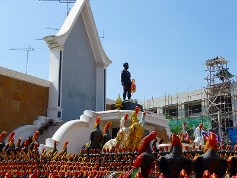
勿論ここで着目したいのは周辺にズラリと並んでいる鶏のオブジェである。
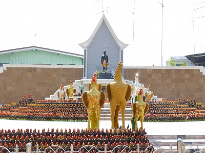
大きいものは2メートル以上、小さいものでも30センチ以上はある。
その数は数千、いや1万近くはあるだろう。
もう、心の中ではコケーッコッコ、コケーコッコ鳴りっぱなしですよ。
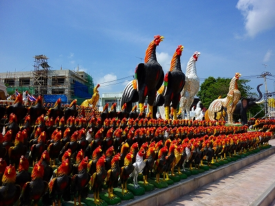
何故、このような鶏だらけ状態になってしまったかというと理由がある。
先にも述べたがナレースワン王は子供の頃ビルマに捕らわれていた。
その際、ビルマの副王と戦況を占う意味で闘鶏をして、勝利したのだという。
それ以後、闘鶏はナレースワン王のシンボルとなったのだ。
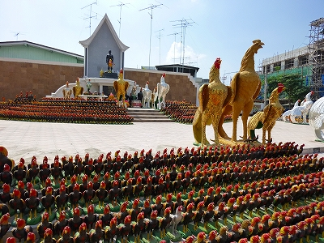
スパンブリの人はこのナレースワン像に願掛けをして、願いが叶うと鶏の像を奉納するのだという。
つまり、このナレースワン像は失地回復を果たした業績を顕彰するという目的と同時に、信仰の対象となっているのだ。
日本で言えば徳川家康を祀った東照宮のニュアンスかな。
この鶏の置物、スパンブリやアユタヤに行くとあちこちで売られているのを目にする。
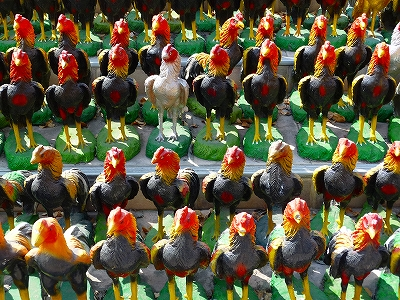
神格化されたナレースワン王への信仰が広まるにつれて鶏奉納の部分が肥大化して、あちこちのお寺などにこの鶏奉納だけが広まったのだろうか。
失地を回復したナレースワン王はその後、ビルマに住むタイ民族であるシャン族開放のために戦闘に赴く途上で死亡している。
こうして考えると、タイとビルマの関係、シャン族のポジション、400年経ってもあまり変わらない気がする。
王の死後、山田長政が権勢を振るい日本人がアユタヤ朝で一代勢力を築くのだが、それはまた別のお話、ということで。
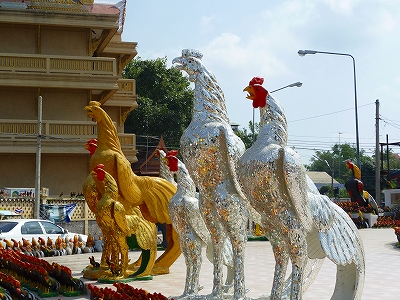
気になるのはこれら奉納された鶏があまりにも新しいこと。
また、ここの場所自体が最近つくられたものっぽい。
これはもしかしたら数年前の鳥インフルエンザと関係あるのでは？
前回スパンブリを訪れた2004年、帰国後しばらくしてタイで鳥インフルエンザが猛威を振るい、特にスパンブリでは死者が出るほど感染が広まった、とニュースで見た。ということは宮崎の口蹄疫の例を上げるまでもなく大量に鳥を殺処分したのだろう。
ひょっとしたらここはその鳥の供養のため、あるいは鳥インフルエンザの疫病封じにつくられたのではなかろうか？
もちろんこれは私の勝手な想像にすぎないが、いくら地元にゆかりの深い大王とはいえ、スパンブリにはナレースワン大王のモニュメントは昔から他の場所にあるし、わざわざ2つ目のモニュメントを作る必要が感じられない。
殺処分された鳥供養のため、と考えれば全てが腑に落ちるのだが、いかがであろう？
そう考えると、単に願い事を数百年前の王様にお願いするという他愛のない光景が一瞬にして反転する。
目の前に見えている光景は一緒なのに意味をすり替えると見え方は正反対になる、という好例だ。
次は龍だ！
泰国珍寺修行 南へ
珍寺大道場 HOME